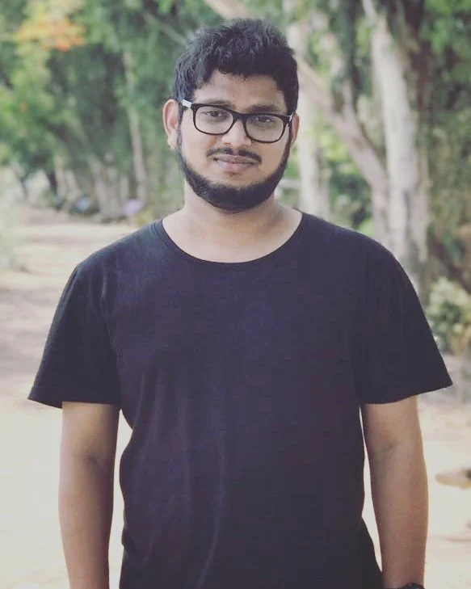
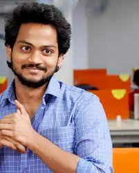
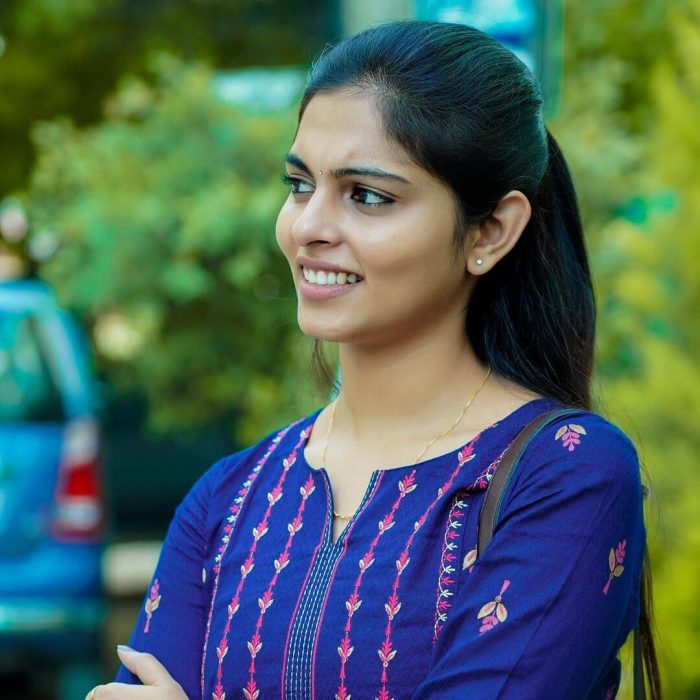
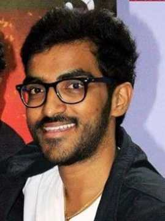

home page
surya web series
- Series Directed by
- series cast
- series produced by
Director

- subbu.k
-
Subbu.K is also known as Subbu Pandu, Subbu K is a Director, Writer, and
Screenwriter from India. Age 29 years (16 December 1993) bornworked in
Visakhapatnam, Andhra Pradesh, India. So far Subbu.K has in Indian and
Tollywood entertainment industries and his artwork has been released in
Telugu language web series
series cast

- Shanmukh Jaswanth Kandregula
-
Shanmukh Jaswanth is also known as Shanmukh Jaswanth Kandregula, Mr
Shannu is an Actor, Dancer, and YouTuber from India. Age 28 years (16
September 1994) born in Vizag, Visakhapatnam, Andhra Pradesh, India. So
far Shanmukh Jaswanth has worked in Tollywood, Telugu, and Indian
entertainment industries and his artwork has been released in Telugu
language web series and tv shows.

- Mounika Reddy
-
Mounika Reddy is also known as Moniekaaa, Appu is an Actress, Model,
Social Media Star, and YouTuber from India. Age 28 years (10 April 1995)
born in Kollipara, Tenali, Guntur, Andhra Pradesh, India. So far Mounika
Reddy has worked in Tollywood, Indian, and Telugu entertainment
industries and her artwork has been released in Telugu language movies,
web series, and songs.

- Ravi Shiva Teja
-
Ravi Shiva Teja is also known as Ravi Siva Teja Paila is an Actor from
India. Age 31 years (22 January 1992) born in Tadepalligudem, Andhra
Pradesh, India. So far Ravi Shiva Teja has worked in Tollywood and
Indian entertainment industries and his artwork has been released in
Telugu language web series and movies.
series produced by
- sanjeev